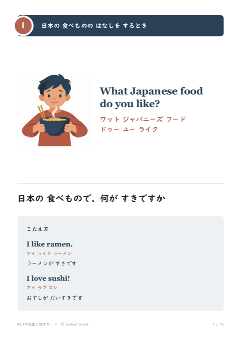
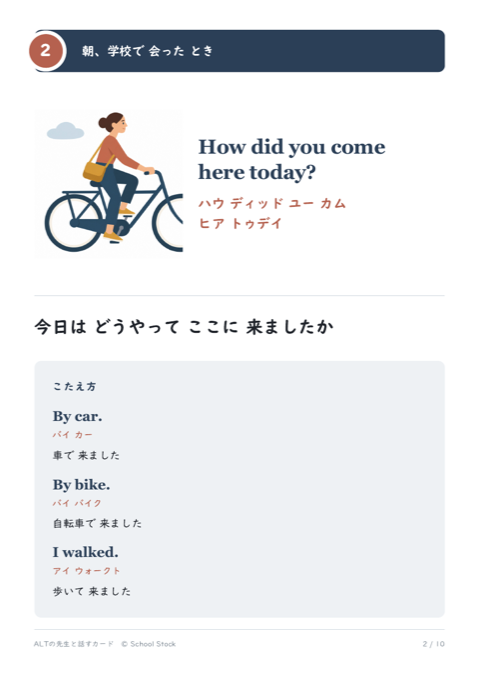
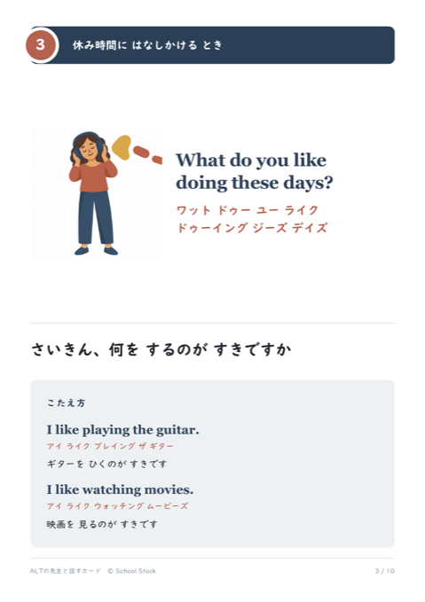
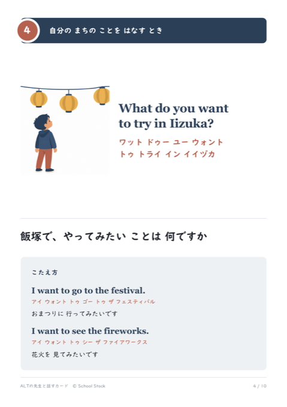
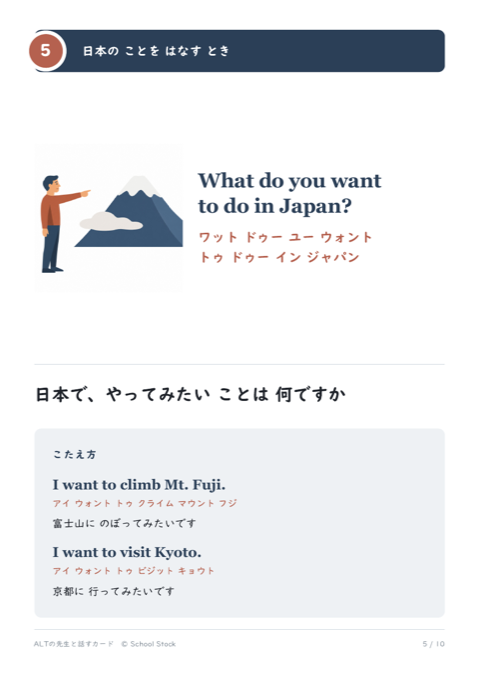
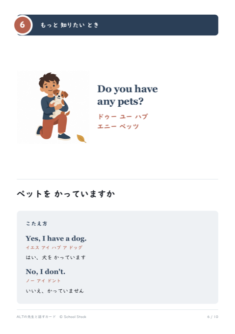
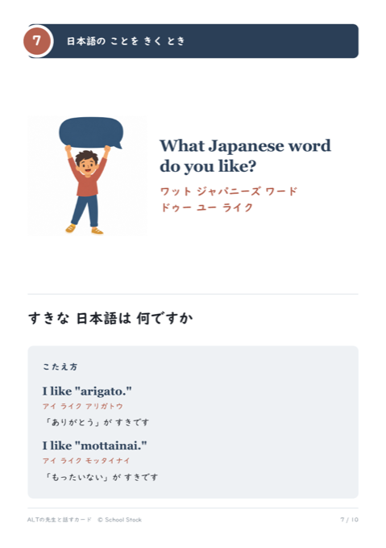
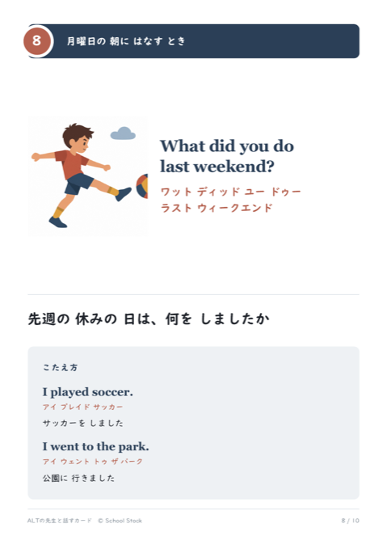
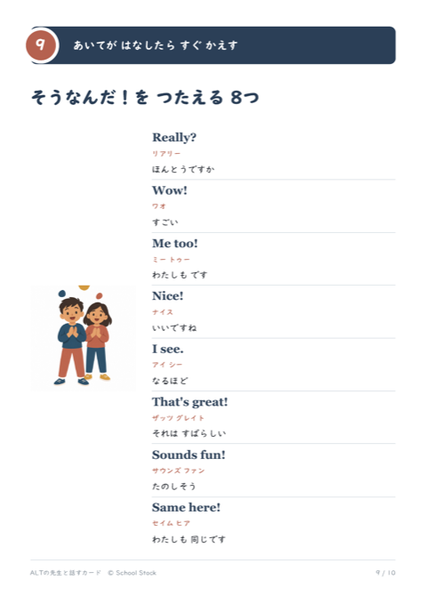
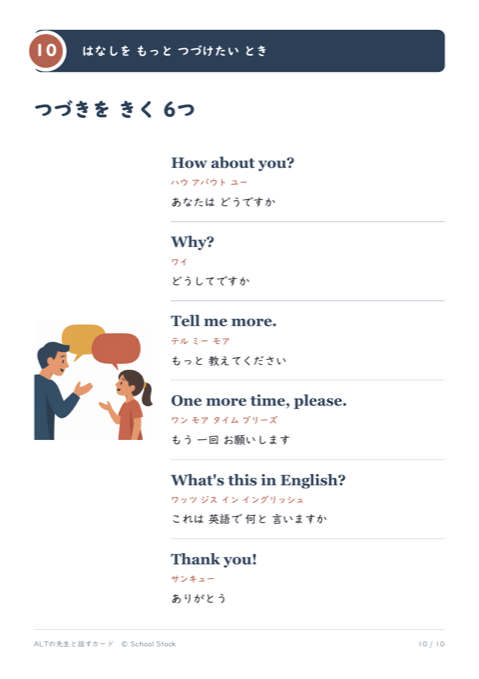

ALTの先生が教室に来る日に、子どもが自分から話しかけられるようにするための掲示です。1枚に英語をひとつだけのせています。カタカナの読み方と日本語の意味、そして「こたえ方」の例まで入れてあるので、たずねたあとの受け答えもできます。教室のうしろや廊下にはって、来られる日まで置いておく使い方を想定しています。









相手が話したら、すぐに返す言葉です。Really?・Wow!・Me too!・Nice!・I see.・That's great!・Sounds fun!・Same here! の8つ。
PDF
会話をつづけるための言葉です。How about you?・Why?・Tell me more.・One more time, please.・What's this in English?・Thank you! の6つ。
PDFカタカナは、日本語の音でいちばん近いものを当てています。正しい発音はALTの先生に言ってもらってください。カタカナは、はじめの一歩のための足場です。
4枚目には地名が入っています。学校のまちの名前に読みかえて使ってください。